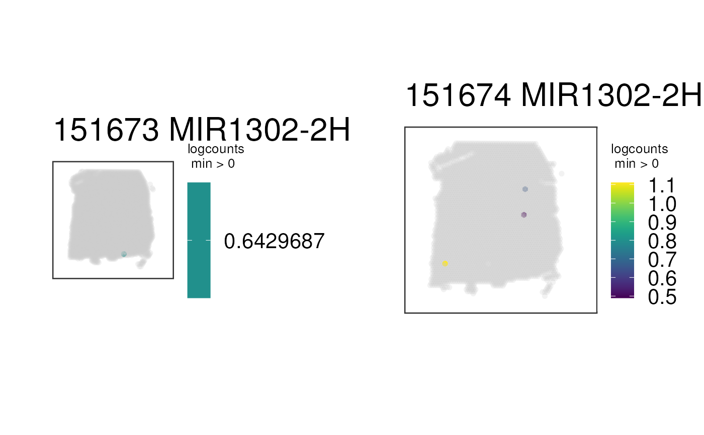

This function visualizes the gene expression stored in assays(spe) or any
continuous variable stored in colData(spe) for a set of samples at the
spot-level using (by default) the histology information on the background.
To visualize clusters (or any discrete variable) use vis_grid_clus().
vis_grid_gene(
spe,
geneid = rowData(spe)$gene_search[1],
pdf_file,
assayname = "logcounts",
minCount = 0,
return_plots = FALSE,
spatial = TRUE,
viridis = TRUE,
height = 24,
width = 36,
image_id = "lowres",
alpha = NA,
cont_colors = if (viridis) viridisLite::viridis(21) else c("aquamarine4",
"springgreen", "goldenrod", "red"),
sample_order = unique(spe$sample_id),
point_size = 2,
auto_crop = TRUE,
na_color = "#CCCCCC40",
...
)Defaults to the output of
fetch_data(type = 'spe'). This is a
SpatialExperiment-class
object with the spot-level Visium data and information required for
visualizing the histology. See fetch_data() for more details.
A character(1) specifying the gene ID stored in
rowData(spe)$gene_search or a continuous variable stored in colData(spe)
to visualize. If rowData(spe)$gene_search is missing, then rownames(spe)
is used to search for the gene ID.
A character(1) specifying the path for the resulting PDF.
The name of the assays(spe) to use for extracting the
gene expression data. Defaults to logcounts.
A numeric(1) specifying the minimum gene expression (or
value in the continuous variable) to visualize. Values at or below this
threshold will be set to NA. Defaults to 0.
A logical(1) indicating whether to print the plots
to a PDF or to return the list of plots that you can then print using
plot_grid.
A logical(1) indicating whether to include the histology
layer from geom_spatial(). If you plan to use
ggplotly() then it's best to set this to FALSE.
A logical(1) whether to use the color-blind friendly
palette from viridis or the color palette used
in the paper that was chosen for contrast when visualizing the data on
top of the histology image. One issue is being able to differentiate low
values from NA ones due to the purple-ish histology information that is
dependent on cell density.
A numeric(1) passed to pdf.
A numeric(1) passed to pdf.
A character(1) with the name of the image ID you want to
use in the background.
A numeric(1) in the [0, 1] range that specifies the
transparency level of the data on the spots.
A character() vector of colors that supersedes the
viridis argument.
A character() with the names of the samples to use
and their order.
A numeric(1) specifying the size of the points. Defaults
to 1.25. Some colors look better if you use 2 for instance.
A logical(1) indicating whether to automatically crop
the image / plotting area, which is useful if the Visium capture area is
not centered on the image and if the image is not a square.
A character(1) specifying a color for the NA values.
If you set alpha = NA then it's best to set na_color to a color that has
alpha blending already, which will make non-NA values pop up more and the NA
values will show with a lighter color. This behavior is lost when alpha is
set to a non-NA value.
Passed to paste0() for making the title of the
plot following the sampleid.
A list of ggplot2 objects.
This function prepares the data and then loops through
vis_gene() for computing the list of ggplot2
objects.
Other Spatial gene visualization functions:
vis_gene_p(),
vis_gene()
if (enough_ram()) {
## Obtain the necessary data
if (!exists("spe")) spe <- fetch_data("spe")
## Subset to two samples of interest and obtain the plot list
p_list <-
vis_grid_gene(
spe[, spe$sample_id %in% c("151673", "151674")],
spatial = FALSE,
return_plots = TRUE
)
## Visualize the spatial adjacent replicates for position = 0 micro meters
## for subject 3
cowplot::plot_grid(plotlist = p_list, ncol = 2)
}
#> 2023-05-07 01:56:15.195102 loading file /github/home/.cache/R/BiocFileCache/72e67179a929_Human_DLPFC_Visium_processedData_sce_scran_spatialLIBD.Rdata%3Fdl%3D1
